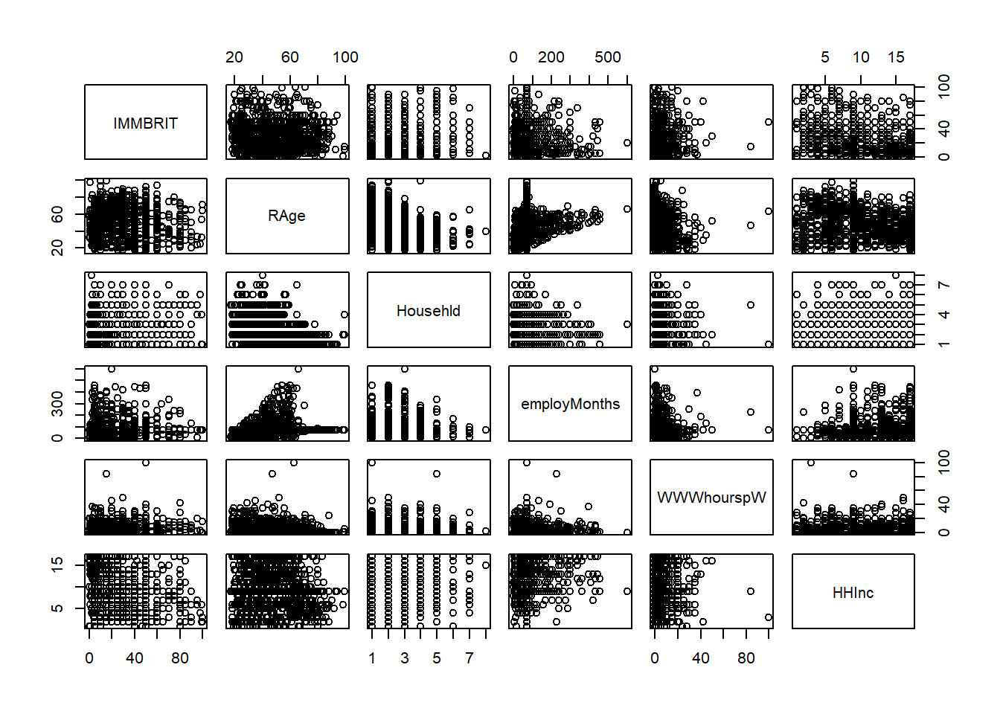
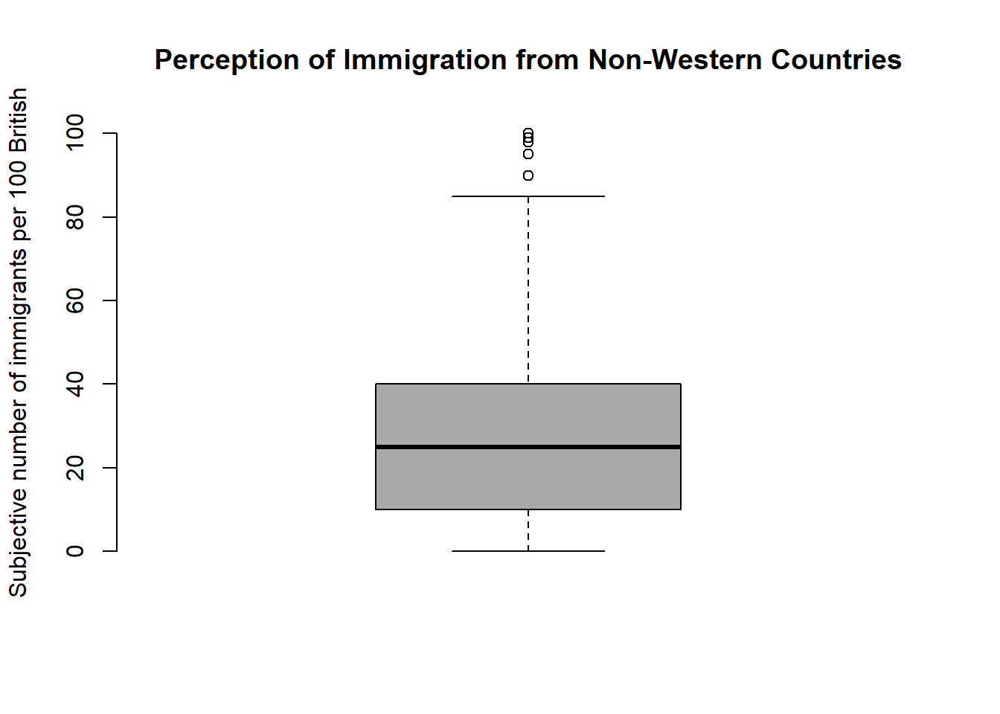
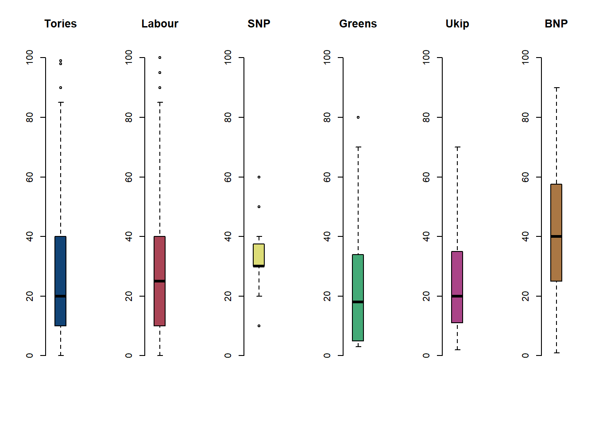

We start by clearing our workspace.
# clear workspace
rm(list = ls())Let’s check the codebook of our data.
| Variable Name | Description |
|---|---|
| IMMBRIT | Out of every 100 people in Britain, how many do you think are immigrants from Non-western countries? |
| over.estimate | 1 if estimate is higher than 10.7%. |
| RSex | 1 = male, 2 = female |
| RAge | Age of respondent |
| Househld | Number of people living in respondent’s household |
| Cons, Lab, SNP, Ukip, BNP, GP, party.other | Party self-identification |
| paper | Do you normally read any daily morning newspaper 3+ times/week? |
| WWWhourspW | How many hours WWW per week? |
| religious | Do you regard yourself as belonging to any particular religion? |
| employMonths | How many mnths w. present employer? |
| urban | Population density, 4 categories (highest density is 4, lowest is 1) |
| health.good | How is your health in general for someone of your age? (0: bad, 1: fair, 2: fairly good, 3: good) |
| HHInc | Income bands for household, high number = high HH income |
# load non-western foreigners data set
load("./data/BSAS_manip.RData")
df <- data2 # make a copy with a shorter name
rm(data2) # remove the original with longer name
names(df)## [1] "IMMBRIT" "over.estimate" "RSex" "RAge"
## [5] "Househld" "Cons" "Lab" "SNP"
## [9] "Ukip" "BNP" "GP" "party.other"
## [13] "paper" "WWWhourspW" "religious" "employMonths"
## [17] "urban" "health.good" "HHInc"dim(df)## [1] 1049 19summary(df)## IMMBRIT over.estimate RSex RAge
## Min. : 0.00 Min. :0.0000 Min. :1.000 Min. :17.00
## 1st Qu.: 10.00 1st Qu.:0.0000 1st Qu.:1.000 1st Qu.:36.00
## Median : 25.00 Median :1.0000 Median :2.000 Median :49.00
## Mean : 29.03 Mean :0.7235 Mean :1.544 Mean :49.75
## 3rd Qu.: 40.00 3rd Qu.:1.0000 3rd Qu.:2.000 3rd Qu.:62.00
## Max. :100.00 Max. :1.0000 Max. :2.000 Max. :99.00
## Househld Cons Lab SNP
## Min. :1.000 Min. :0.0000 Min. :0.0000 Min. :0.00000
## 1st Qu.:1.000 1st Qu.:0.0000 1st Qu.:0.0000 1st Qu.:0.00000
## Median :2.000 Median :0.0000 Median :0.0000 Median :0.00000
## Mean :2.392 Mean :0.2707 Mean :0.2669 Mean :0.01525
## 3rd Qu.:3.000 3rd Qu.:1.0000 3rd Qu.:1.0000 3rd Qu.:0.00000
## Max. :8.000 Max. :1.0000 Max. :1.0000 Max. :1.00000
## Ukip BNP GP party.other
## Min. :0.00000 Min. :0.00000 Min. :0.00000 Min. :0.0000
## 1st Qu.:0.00000 1st Qu.:0.00000 1st Qu.:0.00000 1st Qu.:0.0000
## Median :0.00000 Median :0.00000 Median :0.00000 Median :0.0000
## Mean :0.02955 Mean :0.03051 Mean :0.02193 Mean :0.3651
## 3rd Qu.:0.00000 3rd Qu.:0.00000 3rd Qu.:0.00000 3rd Qu.:1.0000
## Max. :1.00000 Max. :1.00000 Max. :1.00000 Max. :1.0000
## paper WWWhourspW religious employMonths
## Min. :0.0000 Min. : 0.000 Min. :0.0000 Min. : 1.00
## 1st Qu.:0.0000 1st Qu.: 0.000 1st Qu.:0.0000 1st Qu.: 72.00
## Median :0.0000 Median : 2.000 Median :0.0000 Median : 72.00
## Mean :0.4538 Mean : 5.251 Mean :0.4929 Mean : 86.56
## 3rd Qu.:1.0000 3rd Qu.: 7.000 3rd Qu.:1.0000 3rd Qu.: 72.00
## Max. :1.0000 Max. :100.000 Max. :1.0000 Max. :600.00
## urban health.good HHInc
## Min. :1.000 Min. :0.000 Min. : 1.000
## 1st Qu.:2.000 1st Qu.:2.000 1st Qu.: 6.000
## Median :3.000 Median :2.000 Median : 9.000
## Mean :2.568 Mean :2.044 Mean : 9.586
## 3rd Qu.:3.000 3rd Qu.:3.000 3rd Qu.:13.000
## Max. :4.000 Max. :3.000 Max. :17.000# data manipulation
df$RSex <- factor(df$RSex, labels = c("Male", "Female"))
df$health.good <- factor(df$health.good, labels = c("bad", "fair", "fairly good", "good") )
# urban to dummies (for knn later)
table(df$urban) # 3 is the modal category (keep as baseline) but we create all categories##
## 1 2 3 4
## 214 281 298 256df$rural <- ifelse( df$urban == 1, yes = 1, no = 0)
df$partly.rural <- ifelse( df$urban == 2, yes = 1, no = 0)
df$partly.urban <- ifelse( df$urban == 3, yes = 1, no = 0)
df$urban <- ifelse( df$urban == 4, yes = 1, no = 0)
# pairwise comparisons (for a managable subset of the data)
pairs(df[, c("IMMBRIT", "RAge", "Househld", "employMonths", "WWWhourspW", "HHInc")])
# correlations
cor(df[,c("IMMBRIT", "RAge", "Househld", "employMonths", "WWWhourspW", "HHInc")])## IMMBRIT RAge Househld employMonths WWWhourspW
## IMMBRIT 1.00000000 -0.03947882 0.03999490 -0.08112956 -0.02302223
## RAge -0.03947882 1.00000000 -0.40536068 0.12130423 -0.28221388
## Househld 0.03999490 -0.40536068 1.00000000 -0.01966762 0.13894672
## employMonths -0.08112956 0.12130423 -0.01966762 1.00000000 -0.01899327
## WWWhourspW -0.02302223 -0.28221388 0.13894672 -0.01899327 1.00000000
## HHInc -0.32375032 -0.22325828 0.27656287 0.15419221 0.10938389
## HHInc
## IMMBRIT -0.3237503
## RAge -0.2232583
## Househld 0.2765629
## employMonths 0.1541922
## WWWhourspW 0.1093839
## HHInc 1.0000000# how good are we at guessing immigration
boxplot(df$IMMBRIT,
main = "Perception of Immigration from Non-Western Countries",
ylab = "Subjective number of immigrants per 100 British",
frame.plot = FALSE, col = "darkgray")
# by party affiliation
par( mfrow = c(1, 6) ) # plot window separated into 1 row and 6 columns
boxplot(df$IMMBRIT[ df$Cons == 1], frame.plot = FALSE, main = "Tories", col = "#114477", ylim = c(0, 100))
boxplot(df$IMMBRIT[ df$Lab == 1], frame.plot = FALSE, main = "Labour", col = "#AA4455", ylim = c(0, 100))
boxplot(df$IMMBRIT[ df$SNP == 1], frame.plot = FALSE, main = "SNP", col = "#DDDD77", ylim = c(0, 100))
boxplot(df$IMMBRIT[ df$GP == 1], frame.plot = FALSE, main = "Greens", col = "#44AA77", ylim = c(0, 100))
boxplot(df$IMMBRIT[ df$Ukip == 1], frame.plot = FALSE, main = "Ukip", col = "#AA4488", ylim = c(0, 100))
boxplot(df$IMMBRIT[ df$BNP == 1], frame.plot = FALSE, main = "BNP", col = "#AA7744", ylim = c(0, 100))
We want to predict whether respondents over-estimate immigration from non-western contexts. We begin by normalizing our variables. Then we look at the distribution of the dependent variable. We check how well we could predict misperception of immigration in our sample without a statistical model.
# create a copy of the original IMMBRIT variable (needed for classification with lm)
df$IMMBRIT_original_scale <- df$IMMBRIT
# our function for normalization
our.norm <- function(x){
return((x - mean(x)) / sd(x))
}
# continuous variables
c.vars <- c("IMMBRIT", "RAge", "Househld", "HHInc", "employMonths", "WWWhourspW")
# normalize
df[, c.vars] <- apply( df[, c.vars], 2, our.norm )
# predict whether poeple overestimate rate of immigrants (i.e. more than 10.7%)
table(df$over.estimate)##
## 0 1
## 290 759# probability of misperception of immigration in the sample
mean(df$over.estimate) ## [1] 0.7235462# naive guess
median(df$over.estimate)## [1] 1Now, we fit a logistic regression.
# run logistic regression
m.log <- glm(over.estimate ~ RSex + RAge + Househld + Lab + SNP + Ukip + BNP +
GP + party.other + paper + WWWhourspW + religious +
employMonths + rural + partly.rural + urban +
health.good + HHInc, data = df,
family = binomial(link = "logit"))
summary(m.log)##
## Call:
## glm(formula = over.estimate ~ RSex + RAge + Househld + Lab +
## SNP + Ukip + BNP + GP + party.other + paper + WWWhourspW +
## religious + employMonths + rural + partly.rural + urban +
## health.good + HHInc, family = binomial(link = "logit"), data = df)
##
## Deviance Residuals:
## Min 1Q Median 3Q Max
## -2.2342 -1.1328 0.6142 0.8262 1.3815
##
## Coefficients:
## Estimate Std. Error z value Pr(>|z|)
## (Intercept) 0.72437 0.36094 2.007 0.0448 *
## RSexFemale 0.64030 0.15057 4.253 2.11e-05 ***
## RAge 0.01031 0.09073 0.114 0.9095
## Househld 0.02794 0.08121 0.344 0.7308
## Lab -0.31577 0.19964 -1.582 0.1137
## SNP 1.85513 1.05603 1.757 0.0790 .
## Ukip 0.05604 0.44846 0.125 0.9005
## BNP 0.92131 0.57305 1.608 0.1079
## GP -0.51315 0.46574 -1.102 0.2706
## party.other 0.12542 0.18760 0.669 0.5038
## paper 0.14855 0.15210 0.977 0.3287
## WWWhourspW -0.02598 0.08008 -0.324 0.7457
## religious 0.05139 0.15274 0.336 0.7365
## employMonths 0.01899 0.07122 0.267 0.7897
## rural -0.35097 0.21007 -1.671 0.0948 .
## partly.rural -0.37978 0.19413 -1.956 0.0504 .
## urban 0.12732 0.21202 0.601 0.5482
## health.goodfair -0.09534 0.33856 -0.282 0.7782
## health.goodfairly good 0.11669 0.31240 0.374 0.7087
## health.goodgood 0.02744 0.31895 0.086 0.9314
## HHInc -0.48513 0.08447 -5.743 9.30e-09 ***
## ---
## Signif. codes: 0 '***' 0.001 '**' 0.01 '*' 0.05 '.' 0.1 ' ' 1
##
## (Dispersion parameter for binomial family taken to be 1)
##
## Null deviance: 1236.9 on 1048 degrees of freedom
## Residual deviance: 1143.3 on 1028 degrees of freedom
## AIC: 1185.3
##
## Number of Fisher Scoring iterations: 5There are also two other ways to look at the estimated parameters of our model. We can just call the coefficients or we can exploit that they are an object within the summary object of the model object.
# extract coeffiecients only
coef(m.log)## (Intercept) RSexFemale RAge
## 0.72437209 0.64029593 0.01031349
## Househld Lab SNP
## 0.02793778 -0.31577137 1.85513031
## Ukip BNP GP
## 0.05604390 0.92131027 -0.51314845
## party.other paper WWWhourspW
## 0.12542127 0.14855174 -0.02597660
## religious employMonths rural
## 0.05138795 0.01898927 -0.35096655
## partly.rural urban health.goodfair
## -0.37977789 0.12731654 -0.09534035
## health.goodfairly good health.goodgood HHInc
## 0.11669492 0.02743714 -0.48513120# only estimates table of summary
summary(m.log)$coef## Estimate Std. Error z value Pr(>|z|)
## (Intercept) 0.72437209 0.36093823 2.00691428 4.475879e-02
## RSexFemale 0.64029593 0.15056566 4.25260266 2.113003e-05
## RAge 0.01031349 0.09072502 0.11367858 9.094926e-01
## Househld 0.02793778 0.08120874 0.34402436 7.308280e-01
## Lab -0.31577137 0.19963619 -1.58173411 1.137103e-01
## SNP 1.85513031 1.05602885 1.75670419 7.896824e-02
## Ukip 0.05604390 0.44846178 0.12496918 9.005480e-01
## BNP 0.92131027 0.57304844 1.60773542 1.078931e-01
## GP -0.51314845 0.46574170 -1.10178763 2.705540e-01
## party.other 0.12542127 0.18760248 0.66854805 5.037838e-01
## paper 0.14855174 0.15210121 0.97666373 3.287357e-01
## WWWhourspW -0.02597660 0.08008122 -0.32437813 7.456518e-01
## religious 0.05138795 0.15273851 0.33644397 7.365361e-01
## employMonths 0.01898927 0.07121623 0.26664249 7.897444e-01
## rural -0.35096655 0.21006747 -1.67073251 9.477452e-02
## partly.rural -0.37977789 0.19413416 -1.95626517 5.043393e-02
## urban 0.12731654 0.21201600 0.60050437 5.481701e-01
## health.goodfair -0.09534035 0.33855835 -0.28160685 7.782450e-01
## health.goodfairly good 0.11669492 0.31239717 0.37354666 7.087416e-01
## health.goodgood 0.02743714 0.31895327 0.08602245 9.314486e-01
## HHInc -0.48513120 0.08447377 -5.74298026 9.302457e-09# display p-values only
summary(m.log)$coef[, 4]## (Intercept) RSexFemale RAge
## 4.475879e-02 2.113003e-05 9.094926e-01
## Househld Lab SNP
## 7.308280e-01 1.137103e-01 7.896824e-02
## Ukip BNP GP
## 9.005480e-01 1.078931e-01 2.705540e-01
## party.other paper WWWhourspW
## 5.037838e-01 3.287357e-01 7.456518e-01
## religious employMonths rural
## 7.365361e-01 7.897444e-01 9.477452e-02
## partly.rural urban health.goodfair
## 5.043393e-02 5.481701e-01 7.782450e-01
## health.goodfairly good health.goodgood HHInc
## 7.087416e-01 9.314486e-01 9.302457e-09The parameters may be of interest if inference is our goal. But if we are just interested in classification we would like to make predictions. This can be done directly by using the predict() function:
# predict probabilities
pred.probs <- predict( m.log, type = "response")
pred.probs[1:10] # predictions for the first 10 respondents## 1 2 3 4 5 6 7
## 0.5213789 0.9181186 0.8412570 0.8244665 0.8349719 0.6931744 0.9370885
## 8 9 10
## 0.6815346 0.9090575 0.6897961To see how good our classification model is we need to compare the classification with the actual outcomes. We first create an object exp.out which will be either 0 or 1. In a second step, we cross-tab it with the true outcomes and this allows us to see how well the classification model is doing.
# predict whether respondent over-estimates or not
exp.out <- ifelse( pred.probs > 0.5, yes = 1, no = 0)
# confusion matrix (table of predictions and true outcomes)
table(prediction = exp.out, truth = df$over.estimate)## truth
## prediction 0 1
## 0 41 40
## 1 249 719The diagonal elements are the correct classifications and the off-diagonal ones are wrong. We can compute the share of correct classified observations as a ratio.
# percent correctly classified
(41 + 719) / 1049## [1] 0.7244995We can also write code that will estimate the percentage correctly classified for different values.
# more generally
mean( exp.out == df$over.estimate)## [1] 0.7244995This is the performance on the training data and we expect the test error to be higher than this. To get at a better indication of the model’s classification error we can split the dataset into a training set and a test set.
# set the random number generator
set.seed(12)
# random draw of 80% of the observation (row numbers) to train the model
train.ids <- sample(nrow(df), size = as.integer( (nrow(df)*.80) ), replace = FALSE)
# the validation data
df.test <- df[ -train.ids, ]
dim(df.test)## [1] 210 23Now we fit the model using the training data only and then test its performance on the test data.
# re-fit the model on the raining data
m.log <- glm(over.estimate ~ RSex + RAge + Househld + Lab + SNP + Ukip + BNP +
GP + party.other + paper + WWWhourspW + religious +
employMonths + rural + partly.rural + urban + health.good +
HHInc, data = df, subset = train.ids,
family = binomial(link = "logit"))
# predict probabilities of over-estimating but for the unseen data
pred.probs <- predict(m.log, newdata = df.test, type = "response")
# classify predictions as over-estimating or not
exp.out <- ifelse( pred.probs > 0.5, yes = 1, no = 0)
# confusion matrix of predictions against truth
table( prediction = exp.out, truth = df.test$over.estimate)## truth
## prediction 0 1
## 0 9 10
## 1 57 134# percent correctly classified
mean( exp.out == df.test$over.estimate )## [1] 0.6809524We see that the classification accuracy is too high in the training dataset. The accuracy on the test dataset provides a good estimate of the model’s abbility to correctly identify observations.
Let’s try to improve the classification model by relying on the best predictors.
# try to improve the prediction model by relying on "good" predictors
m.log <- glm(over.estimate ~ RSex + rural + partly.rural + urban + HHInc,
data = df, subset = train.ids, family = binomial(link = "logit"))
pred.probs <- predict(m.log, newdata = df.test, type = "response")
exp.out <- ifelse( pred.probs > 0.5, yes = 1, no = 0)
table( prediction = exp.out, truth = df.test$over.estimate )## truth
## prediction 0 1
## 0 7 4
## 1 59 140mean( exp.out == df.test$over.estimate )## [1] 0.7We see that the classification model’s accurcy increases when we only rely the strongest predictors.
You can also make predictions for specific settings:
# prediction for a specific setting
predict(m.log, newdata = data.frame( RSex = c("Male", "Female"),
rural = c(0, 0),
partly.rural = c(0, 0),
urban = c(0, 0),
HHInc = c(9, 9)), type = "response")## 1 2
## 0.03624398 0.07277939library(MASS)# fit model
m.lda <- lda( over.estimate ~ RSex + rural + partly.rural + urban + HHInc,
data = df, subset = train.ids)
m.lda## Call:
## lda(over.estimate ~ RSex + rural + partly.rural + urban + HHInc,
## data = df, subset = train.ids)
##
## Prior probabilities of groups:
## 0 1
## 0.2669845 0.7330155
##
## Group means:
## RSexFemale rural partly.rural urban HHInc
## 0 0.3973214 0.2366071 0.2946429 0.2008929 0.3383915
## 1 0.5967480 0.1886179 0.2520325 0.2699187 -0.1277666
##
## Coefficients of linear discriminants:
## LD1
## RSexFemale 1.2069339
## rural -0.3129345
## partly.rural -0.4224235
## urban 0.1694380
## HHInc -0.7281010# predict outcomes on test set
lda.pred <- predict(m.lda, newdata = df.test)
# check prediction object
names(lda.pred)## [1] "class" "posterior" "x"# predicted probabilities
pred.probs <- lda.pred$posterior[, 2]
# predict returns predicted classification directly
exp.out <- lda.pred$class
# confusion matrix
table( prediction = exp.out, truth = df.test$over.estimate)## truth
## prediction 0 1
## 0 7 4
## 1 59 140# percent correctly classified
mean( exp.out == df.test$over.estimate )## [1] 0.7As is often the case, we get similar model performace from the logistic regression as from LDA.
You can also generate these predictions yourself and this will allow you to vary the threshold:
# generate classification ourselves with different thresholds
sum( pred.probs >= .40 ) # over-estimates## [1] 210sum( pred.probs < .40) # realistic evaluation## [1] 0For KNN we need to provide the data in a slightly different format:
library(class)
# training & test data set of predictor variables only
train.X <- cbind( df$RSex, df$rural, df$partly.rural, df$urban, df$HHInc )[train.ids, ]
test.X <- cbind( df$RSex, df$rural, df$partly.rural, df$urban, df$HHInc )[-train.ids, ]
# response variable for training observations
train.Y <- df$over.estimate[ train.ids ]
# re-setting the random number generator
set.seed(123)
# run knn
knn.out <- knn(train.X, test.X, train.Y, k = 1)
# confusion matrix
table( prediction = knn.out, truth = df.test$over.estimate )## truth
## prediction 0 1
## 0 8 10
## 1 58 134# percent correctly classified
mean( knn.out == df.test$over.estimate )## [1] 0.6761905We can try and increase the accuracy by changing the number of nearest neighbors we are using:
# try to increae accuracy by varying k
knn.out <- knn(train.X, test.X, train.Y, k = 7)
mean( knn.out == df.test$over.estimate )## [1] 0.6952381Lastly, we can try to model the underlying process and classify afterwards. By doing that, the depdendent variable provides more information. In effect we turn our classification problem into a regression problem.
# fit the linear model on the numer of immigrants per 100 Brits
m.lm <- lm(IMMBRIT ~ RSex + rural + partly.rural + urban + HHInc,
data = df, subset = train.ids)
# predictions by "hand"
betas <- as.matrix(coef(m.lm))
X <- cbind( 1, df.test$RSex == "Female",
df.test$rural,
df.test$partly.rural,
df.test$urban,
df.test$HHInc)
# yhat (y_hat = X * betas)
y_hat <- X %*% betas
# alternatively using predict
y_hat2 <- predict(m.lm, newdata = df.test)
# check that both are similar
all(y_hat == y_hat2)## [1] TRUE# threshold for classfication
threshold <- (10.7 - mean(df$IMMBRIT_original_scale)) / sd(df$IMMBRIT_original_scale)
# now we do the classfication
exp.out <- ifelse( y_hat > threshold, yes = 1, no = 0)
# confusion matrix
table( prediction = exp.out, truth = df.test$over.estimate)## truth
## prediction 0 1
## 1 66 144# percent correctly classified
mean( exp.out == df.test$over.estimate)## [1] 0.6857143We do worse by treating this as a regression problem rather than a classification problem.
In this problem, you will develop a model to predict whether a given car gets high or low gas mileage based on the Auto dataset from the ISLR package. Start by loading library(ISLR). Check the codebook of the Auto data set that comes with the ISLR package by typing ?Auto.
mpg01, that contains a 1 if mpg contains a value above its median, and a 0 if mpg contains a value below its median. You can compute the median using the median() function. Note you may find it helpful to use the data.frame() function to create a single data set containing both mpg01 and the other Auto variables.mpg01? Scatterplots and boxplots may be useful tools to answer this question. Describe your findings.mpg01 using the variables that seemed most associated with mpg01 in (b). What is the test error of the model obtained? Perform logistic regression on the training data in order to predict mpg01 using the variables that seemed most associated with mpg01 in (b). What is the test error of the model obtained?mpg01. Use only the variables that seemed most associated with mpg01 in (b). What test errors do you obtain? Which value of K seems to perform the best on this data set?This problem involves writing functions.
Write a function, Power(), that prints out the result of raising 2 to the 3rd power. In other words, your function should compute \(2^3\) and print out the results.
Hint: Recall that \(x^a\) raises x to the power a. Use the print() function to output the result.
Create a new function, Power2(), that allows you to pass any two numbers, x and a, and prints out the value of \(x^a\). You can do this by beginning your function with the line
Power2 <- function(x, a){You should be able to call your function by entering, for instance,
Power2(2, 8)on the command line. This should output the value of \(3^8\), namely, 6,561.
Using the Power2() function that you just wrote, compute \(10^3\), \(8^17\), and \(131^3\).
Now create a new function, Power3(), that actually returns the result \(x^a\) as an R object, rather than simply printing it to the screen. That is, if you store the value \(x^a\) in an object called result within your function, then you can simply return() this result, using the following line:
return(result)The line above should be the last line in your function, before the } symbol that closes the function.
Now using the Power3() function, create a plot of \(f(x) = x^2\). The \(x\)-axis should display a range of integers from 1 to 10, and the \(y\)-axis should display \(x^2\). Label the axes appropriately, and use an appropriate title for the figure. Consider displaying either the \(x\)-axis, the \(y\)-axis, or both on the log-scale. You can do this by using log = "x", log = "y", or log = "xy" as arguments to the plot() function.
Create a function, PlotPower(), that allows you to create a plot of \(x\) against \(x^a\) for a fixed \(a\) and for a range of values of \(x\). For instance, if you call
PlotPower3( 1:10, 3 )then a plot should be created with an \(x\)-axis taking on values \(1,2,.,10\) and a \(y\)-axis taking on values \(1^3,2^3,.,10^3\).